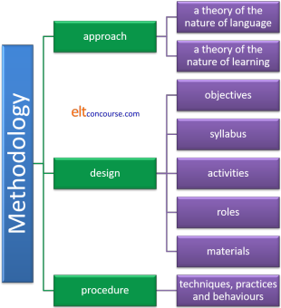
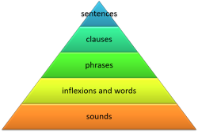

Methodology: the essentials
 |
| Methodology: a way of getting from here to there |
A dictionary definition of methodology is a system of methods used in a particular area of study or activity
If you have followed the very brief guide to
what a methodology
is, some of the following may be familiar to you. Here we are
concerned less with what a methodology is and more with identifying
some important ones.
However, before we start, we have to have some structure to work
within and the choice has fallen on the definition provided by
Richards and Rodgers (2001).
It looks a bit like this:

The three green boxes contain the essential elements:
- Approach
As you see, there are two parts to this:- What is language?
This seems a simple question but it proves quite difficult to answer and any answer will depend on whom you ask.
Is language, for example:
a set of structures into which words are inserted to make sentences?
a large number of words which determine what we mean when we speak or write?
a means of communicating with other people?
a set of concepts and ideas? - How do people learn languages?
This is not easy to answer because nobody really knows although there are lots of plausible (and a few very implausible) theories.
Do we learn, for example:
by forming good habits and imitating teachers and native (or near native) speakers?
by thinking carefully about the rules and trying to apply them to what we speak and write?
by simply listening and picking the language up?
by figuring things out or by being told?
- What is language?
- Design
For any methodology to be worth the name, it has to have a set of recognisable design characteristics. What these are will often (not always) depend on the answers to the first set of questions about the Approach.
For example, a methodology may contain:- A set of objectives such as accuracy in production,
correct pronunciation, the ability to do things in the
language, the ability to read with understanding, the
ability to write clearly and the ability to enter into
conversations with other speakers.
The objectives will often depend on understanding why the learners are in the classroom in the first place. - A syllabus which will be written with the objectives in mind and that may cover grammar, pronunciation, vocabulary and so on but may also include specific writing, speaking, listening and reading skills.
- Some recognisable activity types which will depend on what we think learning is. A methodology may have, for example, lots of listen-and-repeat activities, a good deal of grammatical exercises, some role play and maybe some real-life tasks to complete in the language.
- Some understanding of the roles of the teacher and the
learners.
Are learners active or passive?
Is the teacher the leader or a member of the group?
Does the teacher set the pace or do the learners do that? - A set of materials which can be used to target the objectives and will contain the items on the syllabus. Whether the materials are ordered by grammatical structure, communicative function or by other considerations will depend to a great extent on our answer to what we think language is.
- A set of objectives such as accuracy in production,
correct pronunciation, the ability to do things in the
language, the ability to read with understanding, the
ability to write clearly and the ability to enter into
conversations with other speakers.
- Finally, a methodology will be recognisable in the classroom
because we will be able to see what actually happens:
What techniques do the teachers use?
What do the teachers do?
How do the learners behave?
and so on.
This may include things like drilling, setting up role plays, dictation, pair work tasks and so on for the teacher and reading, writing, answering questions, contributing to discussions, doing drills and so on for the learners.
 |
Three sorts of methodologies in practice |
We are going to cheat slightly here and consider three main methodological strands. Within the strands, there are distinct differences which should not be underestimated but the methodologies share enough of the central characteristics we have set out to discover for them to be considered in only three separate sections.
There is plenty more information about the detail of
methodologies and some of their alternatives on this site so use the
table of related links at the end if you want to know more.
We'll look at the three methodology sets in the light of the diagram
we explained above.
 |
The Classical Method and Grammar translation |
Grammar translation and its forerunner the Classical Method have been around for a very long time and are familiar experiences for people around the world.
- Approach
- Theory of language
Language is seen as a way in to understanding and appreciating the culture of the language we are learning whether it is to read Ancient Greek and Latin texts or access Modern German literature.
Language is primarily a cultural resource and a window into culture. - Theory of learning
We learn a language in much the same way as we learn anything else, by memorising words and structures and being able to render thoughts and ideas in our own language into another as well as being able to render the foreign language into our own.
Hence the second name of the methodology (but it hasn't always been called that).
- Theory of language
- Design
- The objective is to give the learners the tools they need to understand the literature of another culture, living or dead.
- The syllabus is ordered by topic area and difficulty with an equal emphasis being given to vocabulary and grammar.
- Activities include memorising lists of vocabulary with
their translations into the mother tongue of the learners
and to memorising rules and structural items such as
genders, verb endings and plural forms.
A good deal of time is devoted to translating out of and later in to the target language. - The teacher's role is mostly as a knower, being able to
explain rules, provide translations and discuss the meaning
of texts. It is also the teacher's role to set tasks
and provide feedback and set the learning objectives for
every stage and lesson in a course.
The learners will mostly do as they are told and complete tasks in the classroom and for homework. - The materials will usually be specially designed to allow easy access to simple vocabulary and structures before more difficult items but later the course materials will often be authentic literature with, perhaps, guides to style and meaning.
- Procedure
In the classroom, learners will not be expected to speak very much unless they are reading aloud and will not be asked to use the language to express personal ideas and needs. Theirs is the task of unravelling the code.
There will be a good deal of teacher presentation of vocabulary and testing of understanding as lessons proceed but little in the way of communication.
Structural issues will be tackled by explanation and mini-lectures.
You may, of course, be tempted to dismiss Grammar Translation
methodology as hopeless old fashioned and dull. That's fair if
you are expecting language learning to result in the ability to
order a second-class railway ticket or negotiate a major
international peace treaty in the target language. However, if
we consider the methodology in the light of its objectives and
understanding of the nature of language and learning, we may feel
more sympathetic to the approach that is taken in the classroom.
If you are learning to access literature and culture, it makes sense
to be able to apply translation techniques to what you read.
 |
Audio-lingualism and Situational Language Teaching |
Although these describe slightly different methodologies, we'll consider them together because they share a good deal of the three characteristics of a methodology we are using as our structure.
- Approach
- Theory of language
Language is seen as a set of structures which form a pyramid of complexity from individual sounds at the lowest level, through the building blocks of words, morphemes and inflexions, to words and on upwards to phrases, clauses and sentences (which is where the analysis usually stops).
Language is primarily a set of structures with associated words.
Like this:
 - Theory of learning
Learning is about making the language automatic and that involves forming good habits. We need to give people the ability to respond immediately and without too much thought to something like:
What would you like to eat?
with
I'll have the tomato soup and then the casserole, I think.
In particular, we need to focus (at least as far as most forms of these methodologies are concerned) on combining functional words such as I, you, the, then, up, across, because, so etc. with content words such as tomato, soup, casserole, think, have, want, expect etc. into fluently produced and structurally accurate utterances.
People will also learn if we combine the right stimulus to produce the required language and reward and congratulate our learners when they get things right.
We should try to avoid error.
- Theory of language
- Design
- The objective is to give the learners the tools they need to be able to enter into a conversation or a written exchange with other speakers of the language in order to get things done in the situations we predict they will need to operate.
- The syllabus is ordered accordingly around settings in
which we expect or predict our learners will need to
operate. We will have units of the course entitled
in a coffee shop, at the negotiating table, on
an aeroplane, in the classroom and so on which
will be presented via visual and aural information depending on what we predict the learners will need.
The syllabus will be ordered, too, in terms of the difficulty of the structures and the vocabulary items we are concerned to teach bearing in mind the hierarchy we believe underlies language use. - Activities will include memorising dialogues and
repeating them on demand, matching words to pictures and the
places where they will be encountered, listening and
repeating, mechanical drills of pronunciation and other
items all with the aim of making our learners' output as
automatic as possible.
The use of the first language of the learners will be avoided because translation inhibits automatisation. - The teacher's role is not to explain, it is to present
and practise. In fact, the teacher should avoid
explanation in favour of exemplification.
The learners will mostly do as they are told and complete tasks in the classroom and for homework. - The materials will usually be specially designed to allow easy access to simple vocabulary and structures before more difficult items but control of functional words will always be emphasised.
- Procedure
In the classroom, use will often be made of visual and audio recordings of language produced at natural speeds and requiring near-instant responses to the stimuli.
Language laboratories and computer enhanced or delivered lessons will be frequently used.
Learners will not be expected to respond too personally to the material; theirs is a response and habituation role.
Structural issues will be tackled by exemplification of patterns, never by explanation. Enough exposure to carefully selected examples of the patterns we want people to internalise will help them succeed.
Vocabulary will be introduced in unambiguous and obvious settings to make the meanings clear.
The pronunciation of individual vocabulary items and longer phrases will be intensively practised through repetition drills.
You may be tempted to say that these methodologies are too
mechanical and impersonal allowing little imaginative and personal
use of the language. However, you may also consider that
although you may not want the tomato soup, the ability to produce a
pre-formed sentence frame such as
I think I'll have the ... and then the ...
or
Would you like some ... ?
Could you ... the ... to ... ?
etc.
is an enormous aid to fluent speech.
In fact, native users of any language have thousands of such frames
at their command and they use them without conscious thought leaving
thinking space for the really important content.
Much speech is an automatic process and a methodology which
recognises this is a valuable one.
 |
Communicative Language Teaching and Task-based Learning |
We are taking these two methodologies together because, although
they differ quite markedly in terms of design and procedure, the
approach on which they both depend is identical.
Task-based Learning is often considered a subcategory of
Communicative Language Teaching but there are many who feel it is
different enough in terms of lesson design and procedures to form a
category of its own.
To see exactly how they differ, refer to the list of related guides
at the end.
- Approach
- Theory of language
Language is not fundamentally a set of structures. It is a means of communication of ideas between people. Structure and the lexicon are the vehicle but the driving force is the need to communicate. Whenever language is produced via whatever medium, there lies behind it a communicative purpose.
Almost any language can achieve a desired functional outcome so, for example, I can say:
Do you have any paper?
and that can mean
Please give me some paper
I want you to write something down
I want to know what you have with you
I want you to give some paper to someone else
and many other things depending on the context, the roles we are in and the intentions of ourselves and the people around us.
Structural theories of language, it is argued, fall far short of a systematic analysis of meaning. Communicative approaches are all about meaning. - Theory of learning
Language is communally constructed in the course of communication. We learn language not by memorising rules but under the pressure to get our meaning across in the most precise and appropriate way we can.
The effort to communicate will result in the learning because communication comes before structure.
We cannot and should not expect language to be perfectly formed and we know, too, that making mistakes and then realising where we have gone wrong so we can refine our output is all part of the learning process.
We can get from
Paper!
to
Can you let me have some paper?
not by being told what's right but by being given examples in context and refining our own production to conform to the social needs we encounter.
Motivation to improve comes from successful but not perfect communication and error is part of that process.
- Theory of language
- Design
- The objective remains the same as it is for and Audio-lingual or Situational methodology: it is to give the learners the tools they need to be able to enter into a conversation or a written exchange with other speakers of the language in order to get things done in the situations we predict they will need to operate.
- The syllabus is, accordingly, ordered around situations
and what is appropriate language use in them. We will
have units of the course entitled asking for and
giving personal information, persuading others to do what we
want, agreeing and disagreeing, explaining processes and
recounting events and so on depending on what
we want our learners to be able to do and, moreover, on what
they want to be able to do. All the
target functions will be embedded in recognisable and
realistic settings.
The syllabus may be ordered, too, in terms of the difficulty of the structures and the vocabulary items we are concerned to teach but some operating in this paradigm will not consider that necessary because we can, as we have seen, use very simple language to realise complex functions and complex language to realise elementary functions. - Activities will vary very considerably. Task-based
approaches focus on achieving the aims of a task such as
ordering items by preference, designing procedures, carrying
out surveys, planning events and much more.
In other traditions, situations will be used in which to insert the practice of functional language to communicate and areas of human experience such as talking about habits, suggesting courses of action, describing oneself and so on will be more to the fore. - The teacher's role is not to explain, it is to present
and enable practice. In a strict task-based approach
explanation and practice follow the achievement of the task
and in a strongly communicative tradition, explanations of
grammar and drilling of items are abjured altogether.
In other situations, it is often considered acceptable to use any technique that comes to hand providing the target of the process is communicative competence not structural knowledge.
The learners will be far more active and will often work together to complete tasks and do activities and will be encouraged to make the language they are using relevant and personal to them whenever that is possible. - The materials will sometimes be specially designed to allow easy access to simple vocabulary and functions but the use of authentic, unaltered materials is generally considered a useful contribution because it is the complexity of the task one is set not the difficulty of the materials which is the deciding factor when it comes to success.
- Procedure
In the classroom, use will also often be made of visual and audio recordings of language produced at natural speeds but the emphasis is not on immediate response but on presenting a rich resource for the learners to incorporate into their own production when set the task of trying to communicate personal intentions.
Learners will be expected to respond personally to the material and to extend their repertoire by exposure to, and active noticing, of the language they see and hear.
Structural issues will be tackled in weaker and less strict forms of the methodologies but by exemplification of patterns and appropriacy in terms of style and setting. In many versions of these methodologies, explanation is not forbidden.
Vocabulary will be introduced in unambiguous and obvious settings to make the meanings and appropriacy of use clear.
These two methodologies, which share many characteristics,
are now almost the only ones that many teachers employ. Of
late, there has been increasing recognition that structural issues
are also important and that cognitive (i.e., active thinking)
processes are important in acquiring the level of language accuracy
which is needed for precise communication. In other words,
formal accuracy is part of not an alternative to communicative
accuracy.
We should not be surprised to see, therefore, some mechanical
drilling and repetition work being incorporated into a communicative
methodology.
 |
What is not methodology |
It is common for some ways of doing things to be referred to as method or methodology but this is to misunderstand the terms as they are used in our field. In non-technical language, of course, method just means a way of doing something but that is not how it should be used in ELT. For example:
- Structuring a lesson along the lines of Test > Teach > Test or Presentation > Practice > Production is not to use a methodology. It is simply a way to arrange procedures and tasks in a lesson. Both these structures can inhabit very different methodologies.
- Taking an inductive approach in which learners are asked to figure out the patterns and rules from language examples or a deductive approach in which learners are given the rule and asked to apply it to language are just ways to approach making things learnable and accessible. Neither qualifies as a methodology and neither can be used in isolation. This is not an either-or distinction. Even if one starts with a purely inductive approach in the classroom, the aim has to be for the learners to hypothesise a rule (preferably the right one) and then apply it to further examples of the target language. The second procedure is, of course, purely deductive. There is little point in putting learners to the trouble of constructing a rule from exemplification if they are not then encouraged to apply it.
- Making lessons learner centred by, for example, negotiating the syllabus with the learners, making feedback routines come from the class rather than the teacher or encouraging peer-teaching and peer-correction does not count as a methodology. It may be an approach to classroom management but it is not a methodology.
- Even approaches taken by people who claim to be employing a methodology may not really qualify. Dogme, for example, is an approach to teaching which sits comfortably within Communicative Language Teaching so it is probably better described as an approach to lesson design rather than grandly calling it a methodology.
By the way, if you are taking or have just taken an initial training course, you may be tempted to think there is something called a CELTA or CertTESOL methodology. That is nonsense. Initial training courses usually focus on some form of weak or strong communicative methodology but that is a function of its position in the profession and the training of the tutors on such courses. There really is no such thing as a methodology arising from a training programme.
For more on the differences between theories of learning and language, hypotheses about learning, procedures and techniques, see the guide to methodology refined, linked below.
If you yearn for more in this area, follow the links here.
| the history and development of ELT | which includes much of what precedes here and a good deal more |
| Communicative Language Teaching | this gets a guide to itself because of its dominant position in the profession |
| methodology refined | for most of the above and great deal more that attempts to break things down in the in-service section |
| post-method methodology | a guide in the in-service section which considers the implications of the rejection of all methodologies |
| some alternative methodologies | this guide considers five alternative methodologies: Silent Way, Total Physical Response, Community Language Learning, Suggestopaedia and Dogme |
| the in-service methodology index | which has links to the consideration of a range of methodologies separately |
| how learning happens | which covers some learning theory |
| first- and second-language acquisition | which considers differences and similarities |
| second-language acquisition theories | which looks at how second languages are learned or acquired |
References:
Richards, J, and Rodgers, T, 2001, Approaches and Methods in
Language Teaching, Cambridge: Cambridge University Press